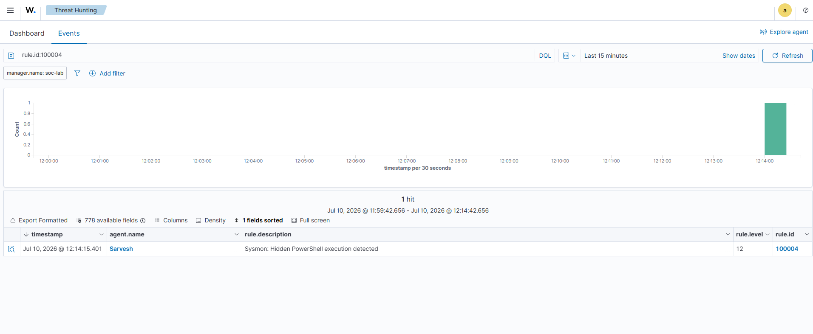
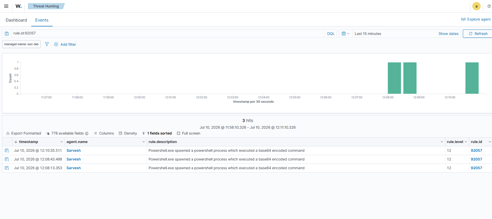
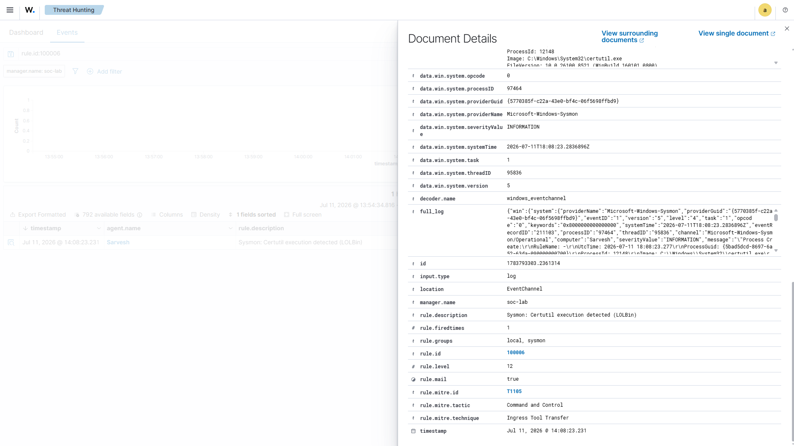

Wazuh
Detection Dashboard
An operational view of the SOCForge home lab. This dashboard tracks real-time endpoint telemetry, correlates custom detection alerts, and documents threat investigation workflows generated during simulation runs.
02
Attack Chains Tested
10+
Alerts Generated
05
MITRE Techniques
7+
Detection Rules
Environment Overview
🖥 Windows Endpoint
Active Windows client forwarding Sysmon telemetry and OS logs.
⚡ Wazuh Manager
Centralized SIEM/XDR engine parsing logs, correlating events, and triggering alerts.
🔎 Detection Engine
Custom Sigma-style rules mapped to MITRE ATT&CK techniques.
Wazuh Dashboard Screenshots

Suspicious PowerShell Execution
Rule ID: 100002 (Suspicious PowerShell)
MITRE: T1059.001

Encoded PowerShell Command
Rule ID: 100003 (Base64 PowerShell)
MITRE: T1059.001

LOLBin File Transfer
Rule ID: 100004 (Certutil Ingress)
MITRE: T1105
Security Events
| Detection | MITRE Technique | Severity | Status |
|---|---|---|---|
| Suspicious PowerShell | T1059.001 | Level 12 | Detected |
| Encoded Command | T1059.001 | Level 12 | Detected |
| Certutil Transfer | T1105 | Level 12 | Detected |